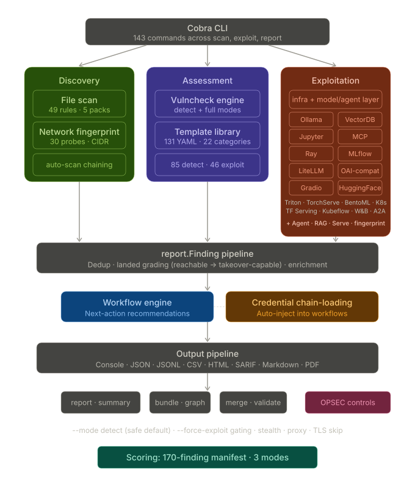

Architecture Overview¶
aipostex is a single-binary Go CLI tool organized around three pillars: discovery, assessment, and exploitation. All components flow findings into a unified output pipeline.
System Diagram¶

The diagram below captures the top-level CLI, discovery/assessment/exploitation pillars, the shared finding pipeline, workflow generation, credential chain-loading, output formats, and post-processing commands in one view.
Package Layout¶
aipostex/
├── cmd/aipostex/ # CLI entry point, subcommands, workflow generators
├── internal/
│ ├── assessment/ # Finding dedup, canonical URLs, severity stats
│ ├── config/ # Runtime configuration struct
│ ├── enrichment/ # landed/stage classification, artifact labeling
│ ├── output/ # Output writers (console, JSON, JSONL, CSV, HTML, SARIF, Markdown, PDF)
│ ├── reportgen/ # Narrative report generation (HTML, Markdown, JSON)
│ └── runtimehttp/ # HTTP client with proxy, stealth, TLS
└── pkg/
├── discover/ # File discovery engine + YAML rules
├── fingerprint/ # Network service fingerprinting + honeypot detection
├── vulncheck/ # Template engine + 131 YAML vuln templates (22 categories)
├── stringutil/ # String coherence scoring
├── exploit/ # Post-exploitation modules
│ ├── common/ # Shared HTTP helpers
│ ├── ollama/ # Ollama API client
│ ├── vectordb/ # ChromaDB, Weaviate, Qdrant, Milvus, pgvector clients
│ ├── jupyter/ # Jupyter Notebook API client
│ ├── mcp/ # MCP JSON-RPC client
│ ├── openaicompat/ # OpenAI-compatible API client
│ ├── ray/ # Ray Dashboard API client
│ ├── mlflow/ # MLflow Tracking API client
│ ├── gradio/ # Gradio API client
│ ├── bentoml/ # BentoML model serving client
│ ├── triton/ # NVIDIA Triton Inference Server client
│ └── torchserve/ # PyTorch TorchServe client
└── report/ # Finding schema and collection
Key Design Decisions¶
Embedded Assets¶
Templates and discovery rules are compiled into the binary using Go's embed.FS directive. This means:
- No external file dependencies at runtime
- Operator-supplied
--templates-dircontent loads after embedded templates and can override by ID - Operator-supplied
--rules-dircontent loads after embedded rules
Unified Finding Schema¶
Every module -- file discovery, fingerprinting, template scanning, and all 18 exploit modules -- produces report.Finding structs with the same field set. This allows:
- Consistent deduplication across sources
- Uniform output formatting regardless of source
- Structured metadata that varies by module but lives in the same
Metadatamap
Workflow-Driven Progression¶
Findings carry optional metadata.workflow objects that suggest concrete next commands. The workflow engine builds these plans based on:
- What service was discovered
- What values were extracted (model names, collection IDs, job IDs, etc.)
- What kill-chain
stagethe current finding represents (recon → access → impact → own)
Read-only commands always appear before gated (force-exploit) commands.
Safety-First Exploit Gating¶
The --force-exploit flag gates all state-changing operations. The requireForceExploit() function in cmd/aipostex/exploit_common.go enforces this at the CLI layer before any exploit client method is called.
Operator Console¶
Alongside the fixed module verbs, the console gives the operator a manual, free-form path to any reachable surface — request for a single arbitrary HTTP operation and shell for an interactive REPL (LLM chat, Jupyter kernel, MCP tool-caller, A2A task console). Both are issued through the tool and reuse the same module clients, transport, and auth as the verbs, so their captured responses flow into the same finding pipeline: each is recorded as a report.Finding, mined for credentials into the loot index, and formatted by the shared output writers. The console is operator-driven (no automated chaining); the execution shells respect the same --force-exploit gate.
Transport Abstraction¶
All HTTP communication goes through internal/runtimehttp, which provides:
- Proxy support (HTTP, HTTPS, SOCKS5) including WebSocket proxy
- TLS skip-verify via
--insecure - Stealth mode with per-request jitter (1-5s), User-Agent rotation, and concurrency caps
- Context-aware cancellation for clean Ctrl+C handling